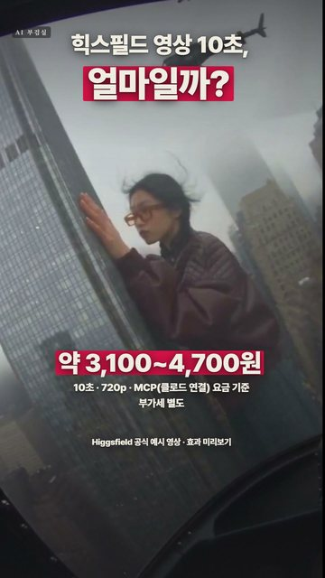

힉스필드에서 Seedance 2.5로 720p 10초 장면을 만들면 70크레딧이 듭니다. 요금제별 1크레딧 값(PLUS 월 $49에 1,000크레딧 · 연 결제 시 월 $39 · ULTRA 월 $129에 3,000크레딧 · 연 결제 시 월 $99 · 자동 충전 $1 = 20크레딧)으로 계산하면 10초에 $2.31~$3.50, 약 3,100~4,700원입니다(10/13 환율 1달러 = 1,341.6원, 부가세 별도). 영상 속 금액은 힉스필드 MCP(클로드 연결) 요금표 기준이며, 웹사이트 요금표(예: PLUS 월 $59, STARTER 월 $19)는 다르게 보일 수 있어요.
3일 무료 체험(100크레딧)은 카드 등록이 필요하고, 체험 중에 해지하지 않으면 3일 뒤 $49가 자동 결제되며 PLUS 월 구독이 시작됩니다(공식 안내). 체험 크레딧은 클로드 같은 MCP 연결에서만 쓰이고 higgsfield.ai 웹에서는 보이지 않으며, 해지는 연결된 채팅에서 "cancel auto-renewal"이라고 말하면 됩니다. 결과가 마음에 안 들어 다시 만들면 크레딧이 다시 차감됩니다(카타나 작업 지침은 영상마다 재시도 1번분을 예산에 함께 잡음).
수치는 2026-10-13 힉스필드 MCP(클로드 연결) 요금 정보 기준이며 바뀔 수 있으니, 결제 화면의 최종 금액을 꼭 확인하세요.
Higgsfield 공식 효과 미리보기 · LTX-2.5(저희 PC에서 직접 생성)